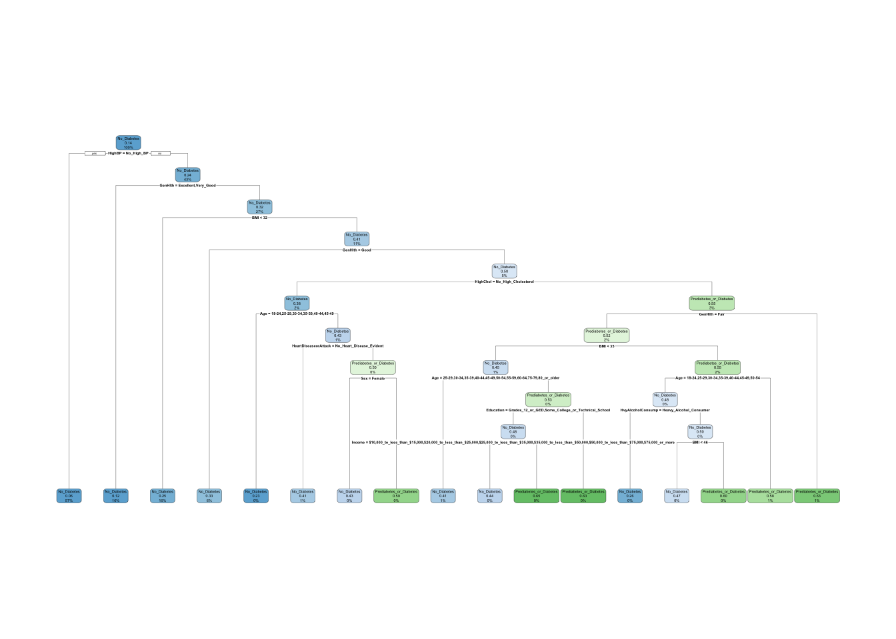

#Library these packages
library(tidyverse)
library(caret)
library(rpart)
library(rpart.plot)
#Read in csv file
Diabetes<-read.csv("diabetes_binary_health_indicators_BRFSS2015.csv")
#Transform data from numeric to factor
Diabetes<-Diabetes|>
mutate(Diabetes_binary=factor(Diabetes_binary,levels=c("0","1"),
labels=c("No_Diabetes","Prediabetes_or_Diabetes")),
HighBP=factor(HighBP,levels=c("0","1"),
labels=c("No_High_BP","High_BP")),
HighChol=factor(HighChol,levels=c("0","1"),
labels=c("No_High_Cholesterol","High_Cholesterol")),
CholCheck=factor(CholCheck,levels=c("0","1"),
labels=c("No_Cholesterol_Check_In_5_Years",
"Yes_Cholesterol_Check_In_5_Years")),
Smoker=factor(Smoker,levels=c("1","0"),
labels=c("Smoker",
"Not_A_Smoker")),
Stroke=factor(Stroke,levels=c("1","0"),
labels=c("Diagnosed_With_Stroke","No_Stroke")),
HeartDiseaseorAttack=factor(HeartDiseaseorAttack,levels=c("1","0"),
labels=c("Coronary_Heart_Disease_or_Myocardial_Infarction",
"No_Heart_Disease_Evident")),
PhysActivity=factor(PhysActivity,levels=c("1","0"),
labels=c("Physical_Activity_in_Past_30_Days",
"No_Physical_Activity_in_Past_30_Days")),
Fruits=factor(Fruits,levels=c("1","0"),
labels=c("Consume_Fruit_1_Or_More_Times_Per_Day",
"Does_Not_Consume_Fruits_Regularly")),
Veggies=factor(Veggies,levels=c("1","0"),
labels=c("Consume_Vegetables_1_Or_More_Times_Per_Day",
"Does_Not_Consume_Vegetables_Regularly")),
HvyAlcoholConsump=factor(HvyAlcoholConsump,levels=c("1","0"),
labels=c("Heavy_Alcohol_Consumer",
"Not_Heavy_Alcohol_Consumer")),
AnyHealthcare=factor(AnyHealthcare,levels=c("1","0"),
labels=c("Has_Health_Insurance",
"No_Health_Insurance")),
NoDocbcCost=factor(NoDocbcCost,levels=c("1","0"),
labels=c("Missed_Doctors_Visit_Due_to_Cost",
"No_Cost_Barrier_to_Healthcare")),
GenHlth=factor(GenHlth,levels=c("1","2","3","4","5"),
labels=c("Excellent","Very_Good","Good","Fair","Poor")),
DiffWalk=factor(DiffWalk,levels=c("1","0"),
labels=c("Difficulty_With_Walking_or_Stairs",
"No_Difficulty_With_Walking_or_Stairs")),
Sex=factor(Sex,levels=c("0","1"),
labels=c("Female","Male")),
Age=factor(Age,levels=c("1","2","3","4","5","6","7","8","9","10",
"11","12","13"),
labels=c("18-24","25-29","30-34","35-39","40-44",
"45-49","50-54","55-59","60-64","65-69",
"70-74","75-79","80_or_older")),
Education=factor(Education,levels=c("1","2","3","4","5","6"),
labels=c("Never_Attended_School_Or_Only_Kindergarten",
"Grades_1-8",
"Grades_ 9-11",
"Grades_12_or_GED",
"Some_College_or_Technical_School",
"Graduated_College_or_Technical_School")),
Income=factor(Income,levels=c("1","2","3","4","5","6","7","8"),
labels=c("Less_than_$10,000",
"$10,000_to_less_than_$15,000",
"$15,000_to_less_than_$20,000",
"$20,000_to_less_than_$25,000",
"$25,000_to_less_than_$35,000",
"$35,000_to_less_than_$50,000",
"$50,000_to_less_than_$75,000",
"$75,000_or_more")),
)Modeling
Introduction
The data explored in this analysis comes from the CDC’s BRFSS 2015 survey. The target variable for analysis is the Diabetes_binary variable, which has two classes: no diabetes and prediabetes/diabetes. There are 21 predictor variables in the dataset that may be included in the subsequent models. The dataset is unbalanced, meaning there are more cases in which the survey respondent had no diabetes than cases in which the respondent had prediabetes or diabetes. This is important for modeling because we want to ensure that our model performs better than the majority class rate, which is the rate of the largest class in the dataset. In this case, the largest class is the no diabetes class. The majority class rate is 86.07 percent, which is important to note if we were using accuracy as our metric. However, in this analysis, we will be using log loss as the evaluation metric, so the majority class rate will not be our primary concern. In addition to using log loss as the metric for determining the best models, the modeling process will include 5 fold cross-validation and will consider logistic regression, classification trees, and random forest models.
Utilizing the transformed data from the EDA process, it is important to split the data into a training and test set for utilization in modeling. By performing this split, it helps prevent over fitting as the goal of modeling is to predict well on unseen data. By saving 30% of our data set to utilize in analyzing the models, it will help determine the optimal model from this modeling process.
#Set a seed for reproducible results
set.seed(8675309)
#Sample from the row indices to include in the test set
n <- nrow(Diabetes)
index <- sample(x = 1:n,
size= round(0.7*n),
replace=FALSE)
#Test and training sets
train <- Diabetes[index, ]
test <- Diabetes[-index, ]Logistic Regression Models
#5-fold CV, tuning
tr <- trainControl(method="cv",
number=5,
classProbs=TRUE,
summaryFunction=mnLogLoss)
#CV to obtain log loss for each model
logit_1 <- train(Diabetes_binary~BMI,
data=train,
method="glm",
family="binomial",
trControl=tr,
metric="logLoss")
logit_2<- train(Diabetes_binary~BMI+HvyAlcoholConsump+Income,
data=train,
method="glm",
family="binomial",
trControl=tr,
metric="logLoss")
logit_3<- train(Diabetes_binary~.,
data=train,
method="glm",
family="binomial",
trControl=tr,
metric="logLoss")
Log_Loss_Results<-rbind(
data.frame(Model="Model 1",logit_1$results),
data.frame(Model="Model 2",logit_2$results),
data.frame(Model="Model 3",logit_3$results)
)
Log_Loss_Results Model parameter logLoss logLossSD
1 Model 1 none 0.3828733 0.0006690048
2 Model 2 none 0.3714013 0.0010490971
3 Model 3 none 0.3164702 0.0007043334Classification Tree
diabetes_rpart <- rpart(Diabetes_binary ~.,
data=train,
method="class",
parms = list(split="information"),
control=rpart.control(xval=5,
minbucket=2,
cp=0))
cp<- diabetes_rpart$cptable[8,1]
#Refit the model with the optimal cp=0.00044686382
tuned_tree <- prune(diabetes_rpart, cp=cp)
rpart.plot(tuned_tree)
Random Forest
#Find optimal tuning parameter for the random forest model
#diabetes_rforest <- train(Diabetes_binary~.,
#method="rf",
#data=train,
#tuneGrid=data.frame(mtry=1:(nrow(train)-1)),
#trControl=tr,
#metric="logLoss",
#ntree=5)
#diabetes_rforest$results
#diabetes_rforest$bestTune